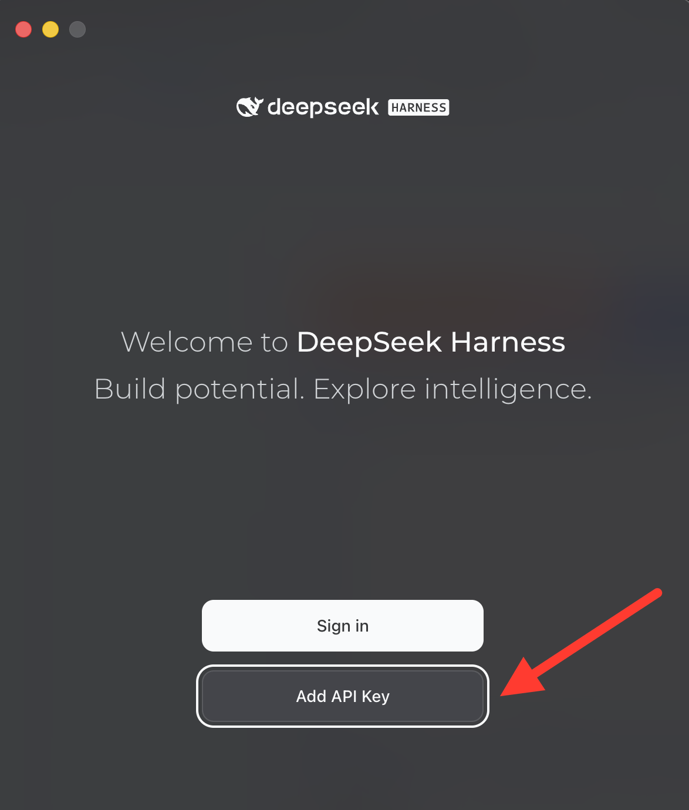
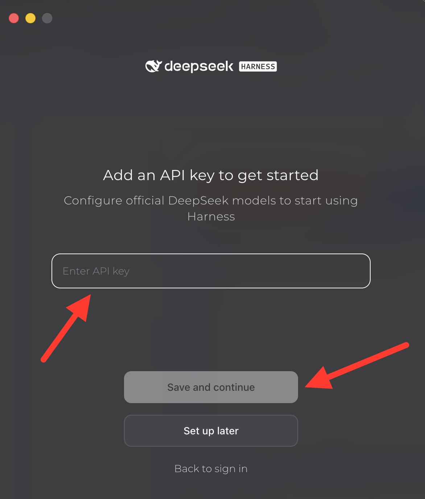

Setup
I'm using on
Pick your app to see how to set it up.
Set up DeepSeek Harness
- Download the DeepSeek Harness
- Open DeepSeek Harness and click Add API Key (not "Sign in").

- Paste in the API key provided by AI Club, then click Save and continue.

Set up the ChatGPT Desktop App
- Download the ChatGPT Desktop App and install it.
- Open it and log in to your ChatGPT account.
Set up the Claude Desktop App
- Download the Claude Desktop App and install it.
- Open it and log in to your Claude account.
Get an FEC API Key
We'll pull campaign finance data from the Federal Election Commission (FEC). Its API is free, but you need your own key.
- Go to the OpenFEC developer page and find the Sign up for an API key form.
- Enter your name and email, agree to the terms, and click Sign up.
- Your key appears on the screen and is also emailed to you. Copy it somewhere safe, like a note on your computer. Don't post it anywhere public.
- Check that it works: copy the address below into your browser's address bar, replace
YOUR_KEYat the end with your key, and press Enter. You should see a page of data about candidates named Smith. If you see an error mentioningAPI_KEY_INVALID, check that you copied the whole key.https://api.open.fec.gov/v1/candidates/search/?q=smith&api_key=YOUR_KEY